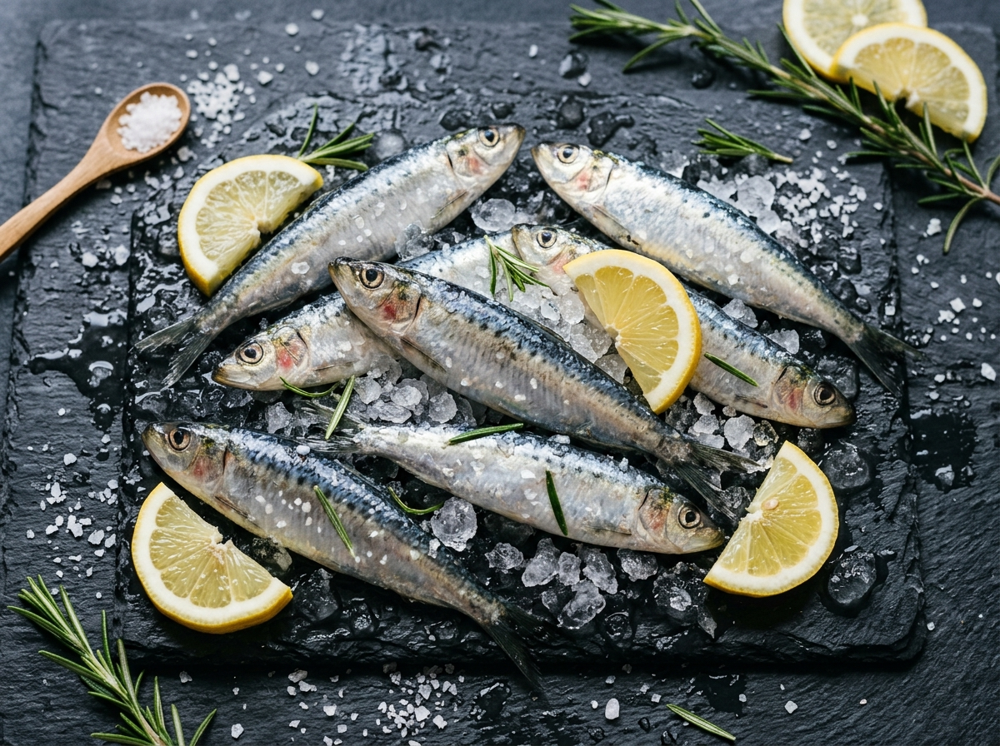
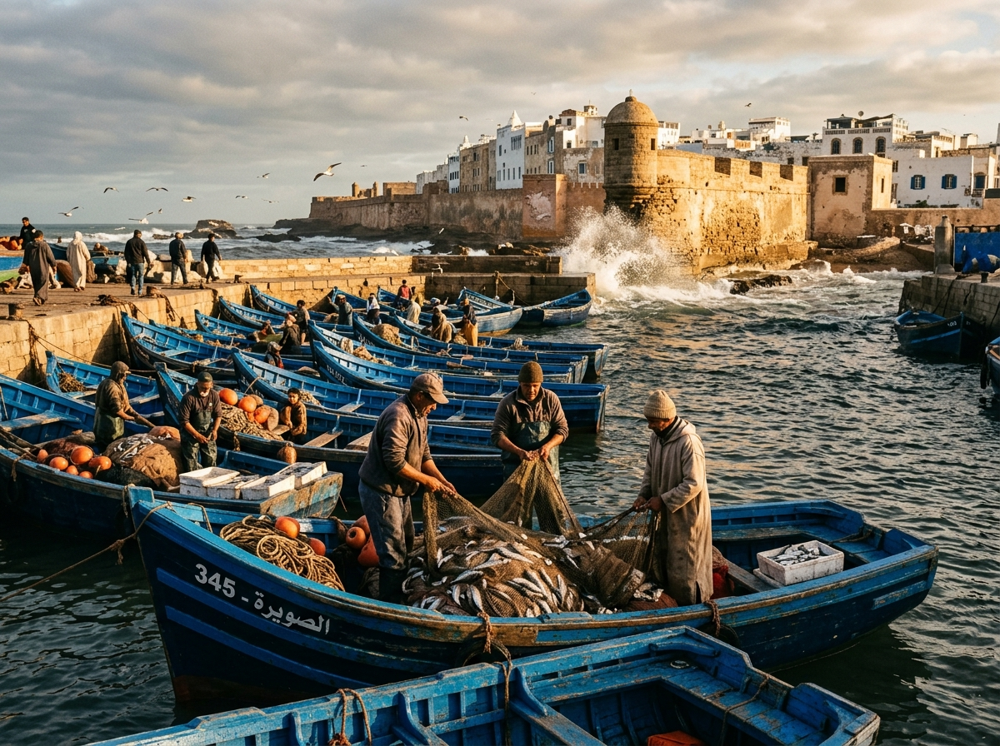
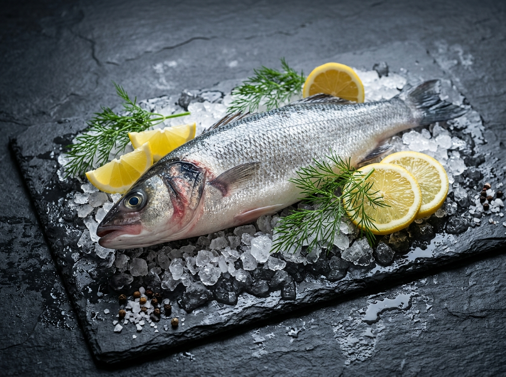
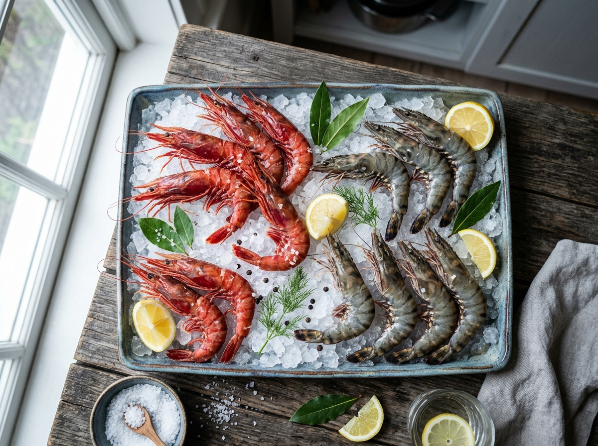
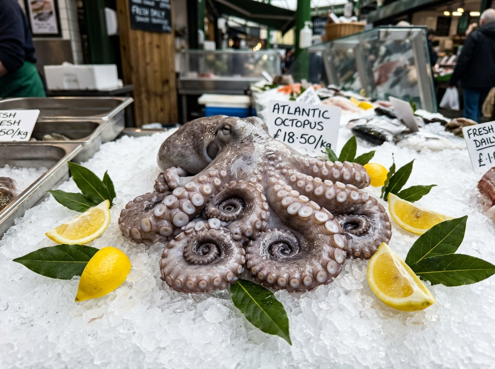
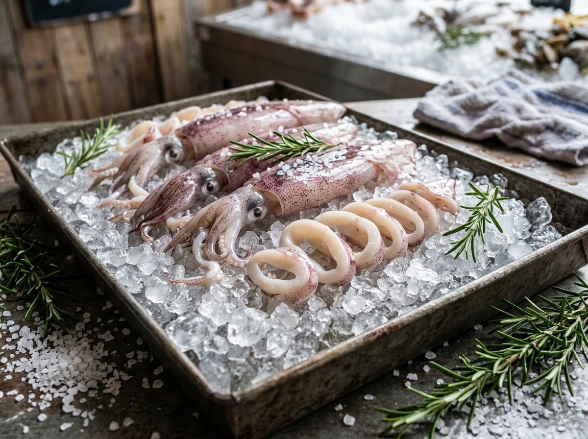
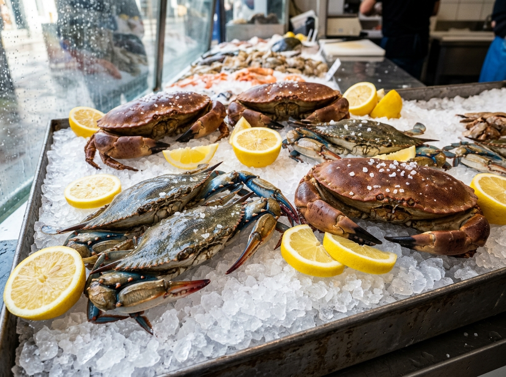
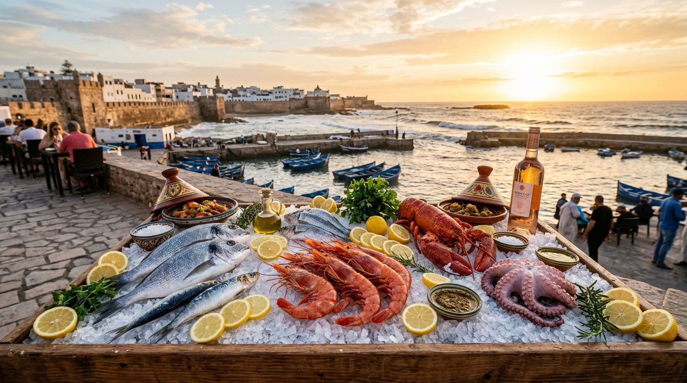
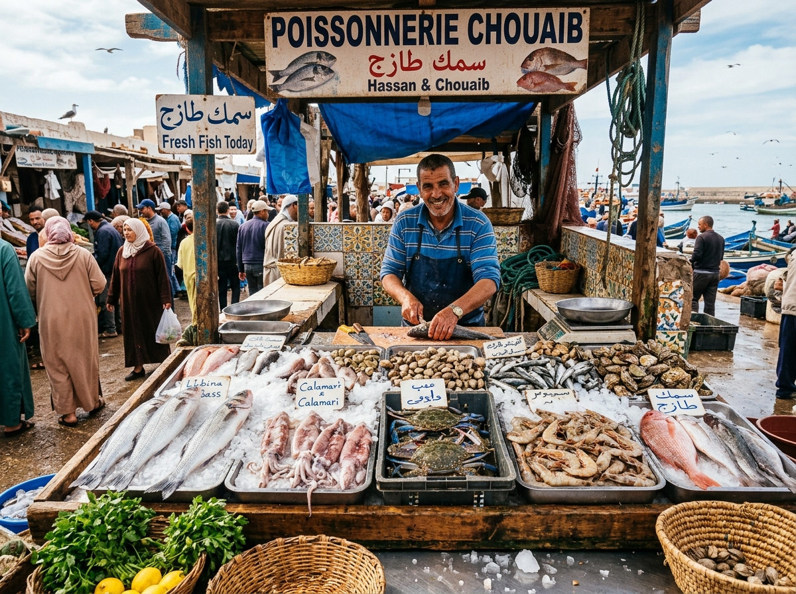

موانئ الصويرة والعرائش صيد الفجرسردين الأطلسي الذهبي
Sardina pilchardus · Sardines Marocainesسردين بلدي فضي ناصع، ممتلئ وغني بالأوميغا 3 والزيوت الطبيعية المفيدة، مثالي للشواء في الفرن أو على الفحم ومحضر بأعلى درجات الطراوة.
نقدم لكم في كريما فيرا تشكيلة استثنائية من أفخر الأسماك وفواكه البحر الطازجة، صيد يومي مستدام من أجود السواحل المغربية مع سلسلة تبريد فائقة تحافظ على جودة ونكهة البحر الأصلية.

انطلقت كريما فيرا من حب عميق للبحر المغربي وتاريخه العريق. نحن لسنا مجرد متجر سمك، بل حلقة وصل حقيقية بين صيادي الصباح الباكر في مرافئ الصويرة، والداخلة، والعرائش، وأكادير، وبين عشاق المأكولات البحرية الراقية والمطاعم المتميزة.
نحرص على انتقاء كل سمكة بعناية دقيقة فور وصول قوارب الصيد، مع تطبيق صارم لسلسلة التبريد من لحظة الرسو حتى وصول الطلب إليكم، لنوفر لكم المذاق البحري الطبيعي، الغني والفريد كما خلقه المحيط.
نختار لكم يومياً أفضل ما تجود به المياه المغربية. تصفحوا أصنافنا الطازجة واطلبوا فوراً عبر واتساب مع تحديد الوزن وطريقة التقطيع المفضلة لديكم.

موانئ الصويرة والعرائش صيد الفجرسردين بلدي فضي ناصع، ممتلئ وغني بالأوميغا 3 والزيوت الطبيعية المفيدة، مثالي للشواء في الفرن أو على الفحم ومحضر بأعلى درجات الطراوة.

شواطئ أغادير وأسفي صيد بلديلحم أبيض ناصع، متماسك وذو نكهة بحرية ناعمة. يعد ملك الأسماك للطهي بالملح الخشن، الشواء في الفرن مع زيت الزيتون والأعشاب المغربية.

مياه الأطلسي العميقة طراوة فائقةروبيان أحمر كبير الحجم، لحم حلو وقوام طري وغني بالعصارة البحرية. رائع لأطباق البايلا، الشواء السريع بالثوم والمعدنوس، والمقبلات الراقية.

مياه الداخلة الباردة صيد يدوييشتهر عالمياً بنعومة أنسجته وجودته النادرة بفضل التيارات البحرية الغنية في خليج الداخلة. ممتاز للسلق، الطواجن المغربية، وسلطات البحر.

مضيق جبل طارق والعرائش صيد القواربكلمار أبيض طازج تماماً، قوام هش ولين دون أي قسوة. يمكن تقطيعه حلقات للقلي الذهبي أو تركه كاملاً للحشو بالأرز وفواكه البحر والصلصة المغربية.

الشواطئ الصخرية بالصويرة طازج ممتلئقشريات بحرية أصيلة ممتلئة باللحم الشهي والمذاق الأطلسي القوي. خيار فاخر لشوربات السي فود، السلق مع الأعشاب العطرية، وموائد الولائم البحرية.
تتمتع السواحل المغربية بتيارات مائية فريدة تجعل ثروتها السمكية من الأغنى والألذ عالمياً. نحرص في كريما فيرا على دعم أسر الصيادين التقليديين وتوفير الأفضل لزبائننا.
نلتزم بتقديم تجربة بحرية لا تضاهى، ترتكز على الجودة العالية، المعاملة الراقية، والسرعة الفائقة.
تصلنا الأسماك مباشرة مع فجر كل يوم من قوارب الصيد دون أي تخزين طويل، لتستمتعوا بمذاق البحر الأصيل.
يقوم خبراؤنا بفحص لمعان العيون، وتماسك القشور، ورائحة اليود الطبيعية لضمان أن أجود القطع فقط هي التي تصلكم.
فخر بموانئنا وثروتنا الوطنية، مع دعم كامل للصيادين المحليين والحفاظ على الاستدامة البيئية للبحر.
نقوم بتنظيف، تقشير، وتقطيع الأسماك (فيليه، ستيك، أو كامل منظف) حسب رغبتكم وطريقتكم المفضلة في الطهي.
نستخدم صناديق حرارية معزولة وثلج مجروش مع شاحنات تبريد مجهزة تضمن بقاء درجة الحرارة مثالية حتى باب منزلكم.
خدمة عملاء راقية وسريعة عبر واتساب، مع إرسال صور وفيديوهات لصيد اليوم والرد على استفساراتكم بكل رحابة صدر.
لقطات حية توثق رحلة الأسماك وفواكه البحر من قوارب الصيادين ومزادات الموانئ حتى وصولها إلى مطابخكم.


حددوا رغبتكم في النموذج أدناه وسيقوم النظام بتجهيز رسالة واتساب منظمة بطلبكم لإرسالها فوراً إلى فريق المبيعات.
اختر الصنف والكمية وسنرد عليك فوراً بالتوفر وتأكيد السعر.
+212 600 000000 / +212 522 000000
متاحون للرد على استفساراتكم وتأكيد الصيد الصباحي
الميناء التقليدي، الصويرة / مركب الصيد البحري، ميناء الدار البيضاء
توصيل مبرد سريع لكافة المدن المغربية الرئيسية
يومياً: من 06:00 صباحاً حتى 20:00 مساءً
استقبال حجوزات الصباح الباكر متاح طوال الأسبوع